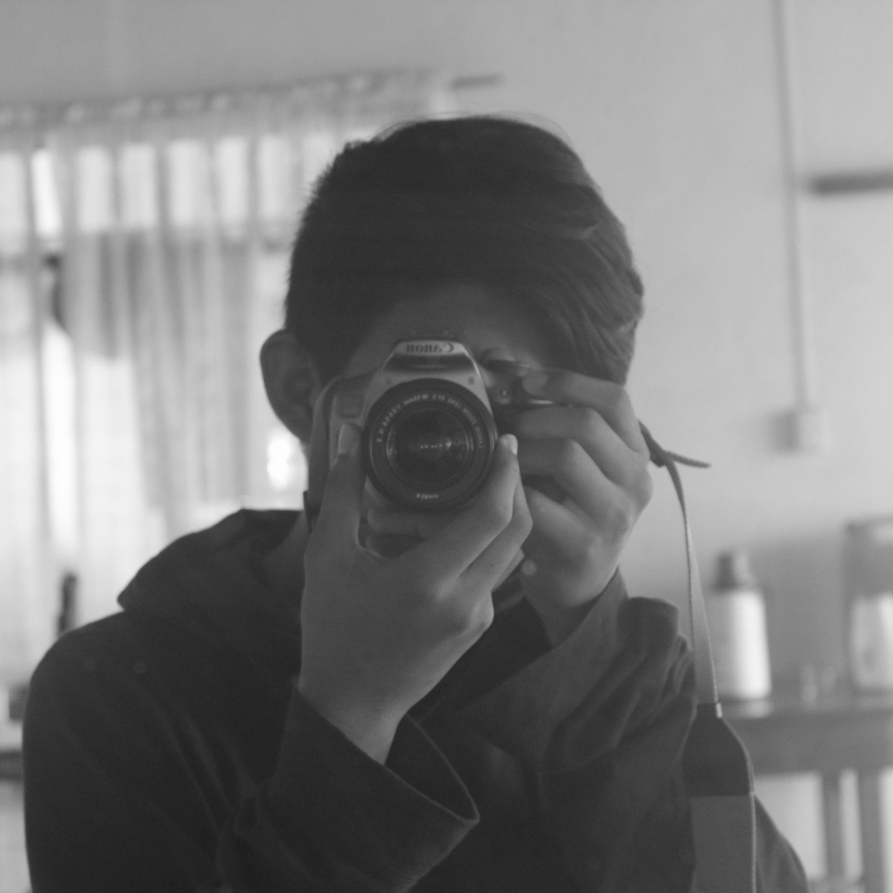

Mark Jefferson Bacaling
I am Mark Jefferson Bacaling, an amature artist and photographer.
I graduated at Balasan National High School which I studied media arts and honed
my skills in both computers and media. I also do traditional drawing at my leisure.
My hobbies are media editing, drawing, anime and gacha games